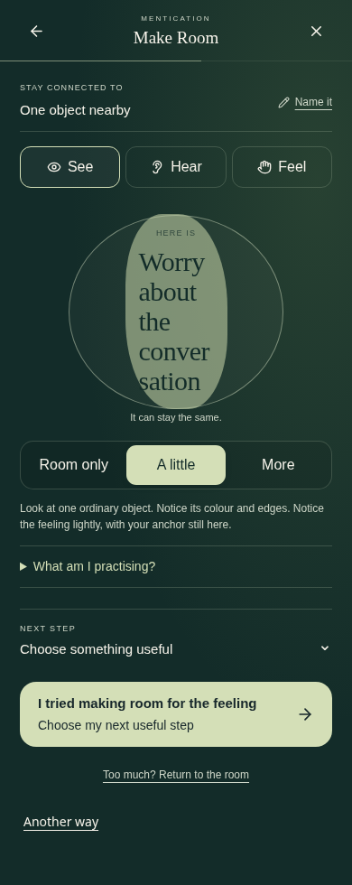
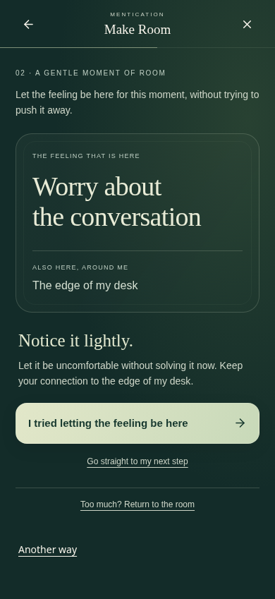
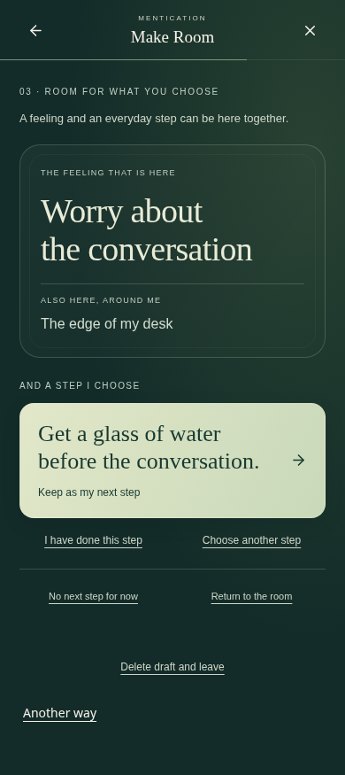

Before: existing practice

After: a gentle moment with an anchor

After: feeling and useful action together

Actual integrated browser captures · 390 × 844 viewport · before: a3d2cad · original notice and chosen action preserved


